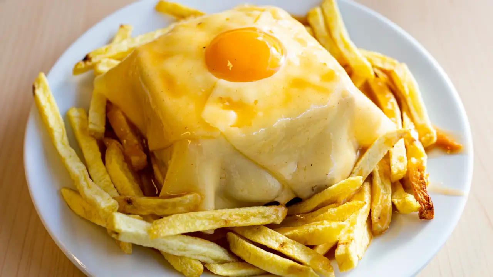

Francesinha
- Prep Time
- 30 min
- Cook Time
- 35 min
- Total Time
- 65 min
- Servings
- 4 servings
Description
Francesinha is a sandwich from northern Portugal, especially the Porto region. It has two slices of bread and various meats, covered with melted cheese and served with sauce and fries. The sauce is a unique part of the sandwich, with each restaurant having its own recipe made from tomatoes, broth, piri piri spices, beer, and Port wine.
It's not an everyday dish, but it's worth trying at least once in your life. If you visit Porto, make sure to try a francesinha.
Ingredients
For the sauce:
- olive oil as needed
- 1 sliced onion
- 2 garlic cloves
- 1 bay leaf
- 1 slice of ham
- 1 can of diced tomatoes
- 1/2 liter of beer
- 1/2 liter of white wine
- 1/2 liter of water
- 1 beef bouillon cube
- salt as needed
- Worcestershire sauce as needed
- 1 tsp of cornstarch
- 1/4 cup of milk
For the sandwich:
- 4 beef tenderloin steaks
- 4 fresh sausages
- 4 linguica sausages
- 8 slices of crustless sandwich bread
- 8 slices of ham
Method
- In olive oil, sauté the onion. As soon as it is translucent, add the garlic.
- Let it sauté for a little while, then add the bay leaf, ham, and tomato.
- Mix well and add beer, wine, and water.
- Season with bouillon stock, salt, and Worcestershire sauce and let it simmer on low heat for about half an hour.
- Remove the bay laf and puree the sauce until it becomes very smooth.
- Dissolve the cornstarch in the milk and add it to the sauce, stirring and letting it cook for a little while.
- Preheat the oven to 180°C.
- Meanwhile, grill the steaks, previously seasoned with salt and pepper, sausages, and linguica, cut in half lengthwise.
- In an oven tray, place 4 slices of sandwich bread, and on top of it, place the steak, sausages, and ham. Cover with another slice of sandwich bread. Cover with 4 slices of cheese. Place the tray in the oven until the cheese is melted.
- Remove from the oven, place each francesinha on a plate, and pour the hot sauce over it